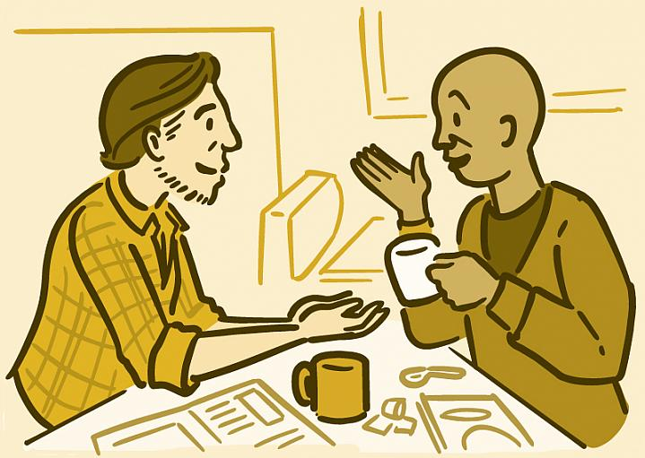
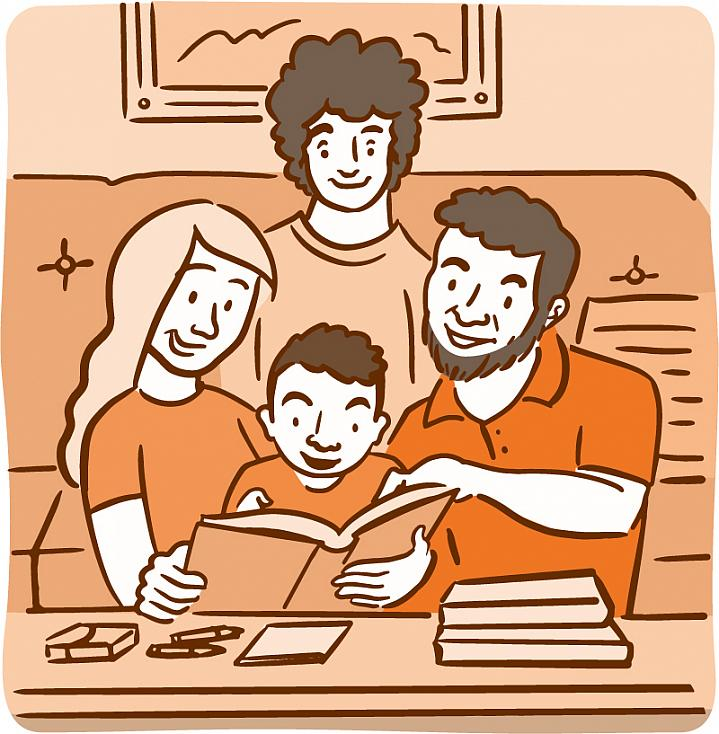
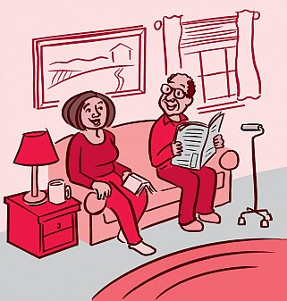

Building Social Bonds: Connections That Promote Well-Being
NIH News in Health || April 2018

Strong, healthy relationships are important throughout your life.
Your social ties with family members, friends, neighbors, coworkers, and others impact
your mental, emotional, and even physical well-being.
“We can’t underestimate the power of a relationship in helping to promote well-being,”
says NIH psychologist and relationship expert Dr. Valerie Maholmes. Studies have found
that having a variety of social relationships may help reduce stress and heart-related
risks. Strong social ties are even linked to a longer life. On the other hand, loneliness
and social isolation are linked to poorer health, depression, and increased risk of early death.
"
In a healthy relationship, you can disagree without hurting each other.
"
What Is Healthy?
Every relationship exists on a spectrum from healthy to unhealthy to abusive.
One sign of a healthy relationship is feeling good about yourself
around your partner, family member, or friend. You feel safe talking
about how you feel. You listen to each other. You feel valued, and you
trust each other.
In an unhealthy or abusive relationship, your partner may blame you for feeling
bad about something they did or said. They may tell you that you’re too sensitive.
Putting you down diminishes you and keeps them in control.
In a healthy relationship, however, if you tell your partner that something they said
hurt your feelings, they feel bad for hurting you. They try not to do it again.
Social Ties Protect
Studies have shown that certain factors seem to protect people from forming unhealthy relationships
over their lifetime. The protection starts early in life. NIH-supported research has shown that the
quality of an infant’s emotional bond with a parent can have long-lasting positive or negative effects
on the ability to develop healthy relationships.


“The early bond has implications that go well beyond the first years of life,” says Dr. Grazyna Kochanska,
an NIH-funded family relationships researcher at the University of Iowa. The goal of Kochanska’s research projects
is to understand the long-term effects of that early bond and to help children develop along positive pathways and
avoid paths toward antisocial behaviors.
A family that functions well is central to a child’s development. Parents can help children learn how to listen,
set appropriate boundaries, and resolve conflicts. Parents teach children by example how to consider other people’s
feelings and act in ways to benefit others.
Secure emotional bonds help children and teens develop trust and self-esteem. They can then venture out of the
family to form other social connections, like healthy friendships. In turn, healthy friendships reduce the risk of
a child becoming emotionally distressed or engaging in antisocial behaviors.